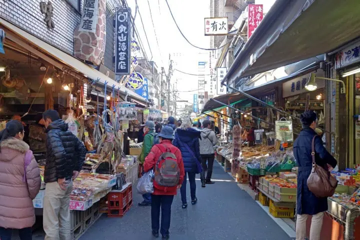
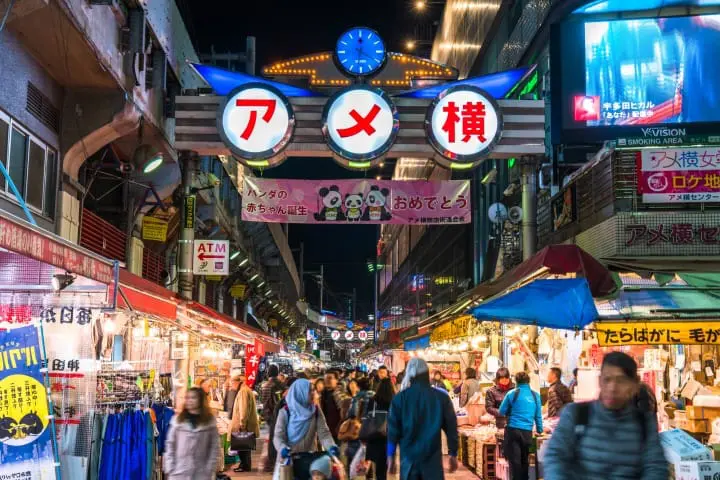

Destinasi Wisata di Tokyo, Jepang
Ada banyak sekali tempat wisata populer di ibu kota Jepang, Tokyo. Saking banyaknya, pasti ada wisatawan yang bingung mau pergi ke mana lebih dulu. dari sekian banyak pilihan, kita akan memperkenalkan beberapa rekomendasi tempat wisata yang tidak boleh Anda lewatkan saat berkunjung ke Tokyo! Jepang terkenal akan kebersihan lingkungannya.
1. Tsukiji Outer Market (築地 場外市場)

Tsukiji Market yang dibuka pada tahun 1935 merupakan pasar yang memiliki nilai transaksi terbesar di dunia. Tsukiji Market terbagi menjadi dua wilayah, yaitu "pasar bagian dalam" yang menjadi tempat para profesional mengadakan transaksi jual beli dan "pasar bagian luar" di mana para pembeli pada umumnya bisa berbelanja seperti biasa. Pada bulan Oktober 2018, "pasar bagian dalam" dipindahkan dari wilayah Tsukiji ke wilayah Toyosu. Meskipun begitu, masih banyak pertokoan dan rumah makan yang tetap beroperasi di "pasar bagian luar" ini, lho! Kuliner-kuliner khas Tsukiji seperti "Yamacho Tamagoyaki" (telur dadar dari toko Yamacho) serta suasana pasar bagian luar yang semarak ini masih bisa Anda nikmati. Yuk, coba berkunjung dan rasakan suasana seru di pasar Tsukiji bagian luar ini!
2. Ameya Yokocho (アメヤ 横丁)

"Ameyoko" atau Ameya Yokocho terletak di Ueno yang dekat dari Stasiun Tokyo maupun Asakusa dan banyak dikunjungi wisatawan mancanegara. Di sini berjajar berbagai jenis toko, mulai dari toko yang menyediakan bahan makanan laut, buah-buahan, serta bahan makanan lainnya, sampai yang menyediakan pakaian, kosmetik, dan drugstore pun ada! Selain itu, di sini juga terdapat sangat banyak rumah makan. Bahkan, ada juga tempat makan masakan Jepang dengan harga yang terjangkau, lho! Suasana yang begitu hidup akan sangat terasa saat Anda berkunjung ke sini.
3. Tokyo Skytree, Oshiage (東京 スカイツリー, 押上)
Pada tahun 2012 menara siaran Jepang yang baru, "Tokyo Skytree" didirikan. Selain itu, "Tokyo Skytree Town" yang merupakan fasilitas komersil di sekitar menara ini juga menjadi lokasi yang wajib Anda kunjungi. Tokyo Skytree memiliki ketinggian 634 meter dan masuk ke dalam Guinness Book of Record sebagai menara tertinggi di dunia. (Rekor gedung tertinggi di dunia, dipegang oleh gedung super tinggi yang ada di Uni Emirat Arab, "Burj Khalifa"). Menara ini memiliki 2 dek observasi, yaitu di ketinggian 350 meter dan 450 meter. Apabila cuaca sedang bagus, Anda bahkan bisa melihat gunung tertinggi di Jepang, Gunung Fuji. Di fasilitas komersil "Tokyo Skytree Town" sekitar menara ini terdapat pertokoan, akuarium, planetarium, dan masih banyak fasilitas lainnya. Tempat wisata ini sangat cocok untuk membeli oleh-oleh sambil bersantai.